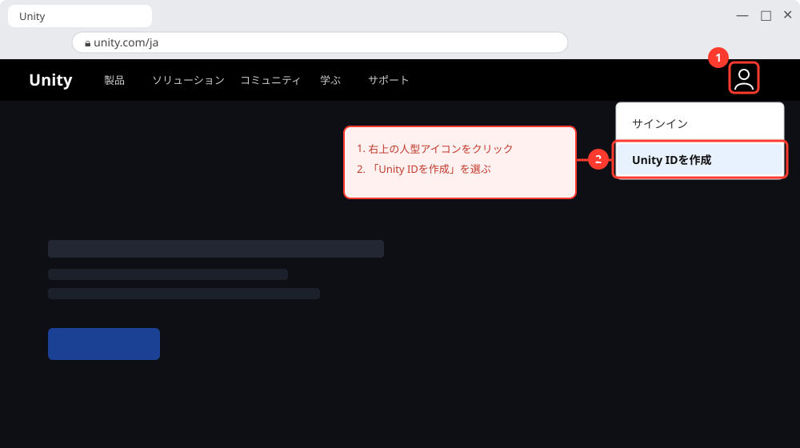
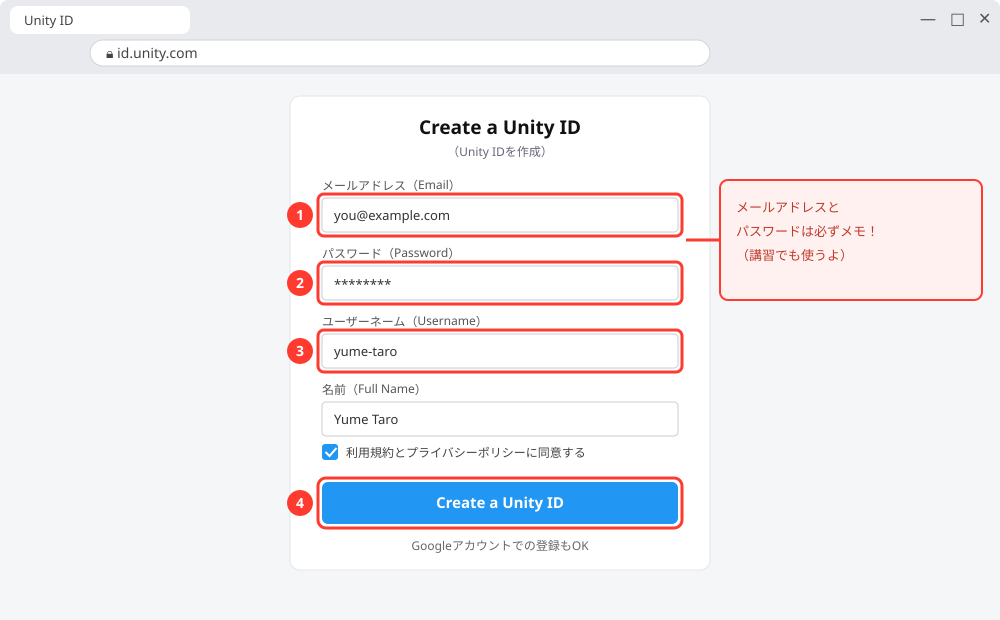
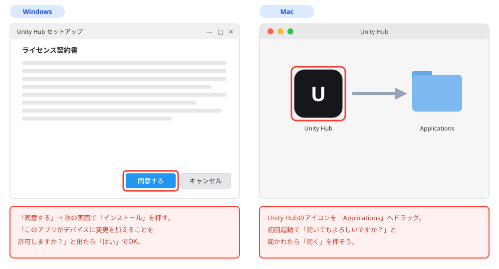
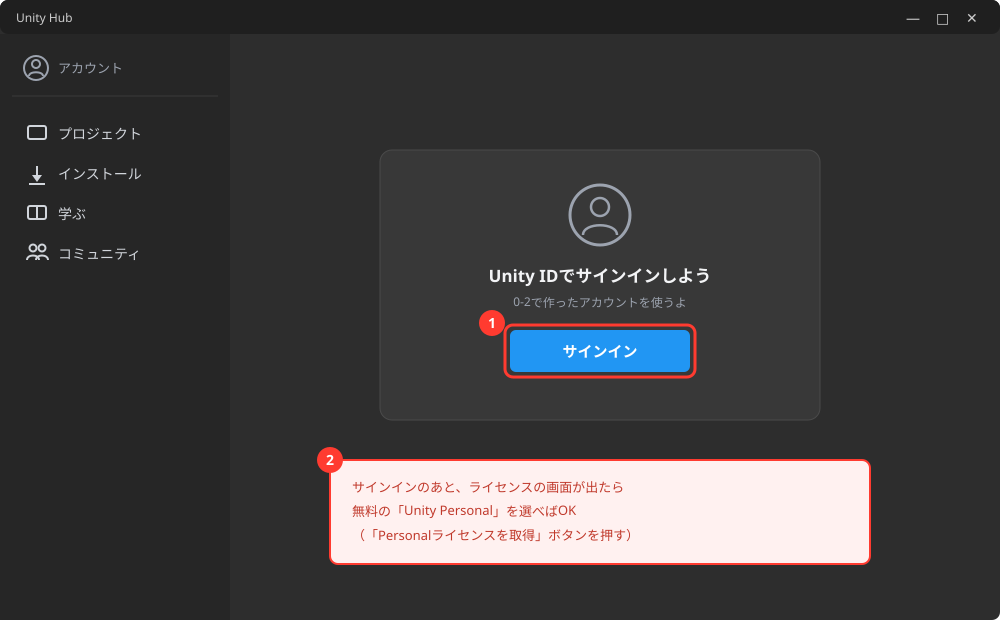
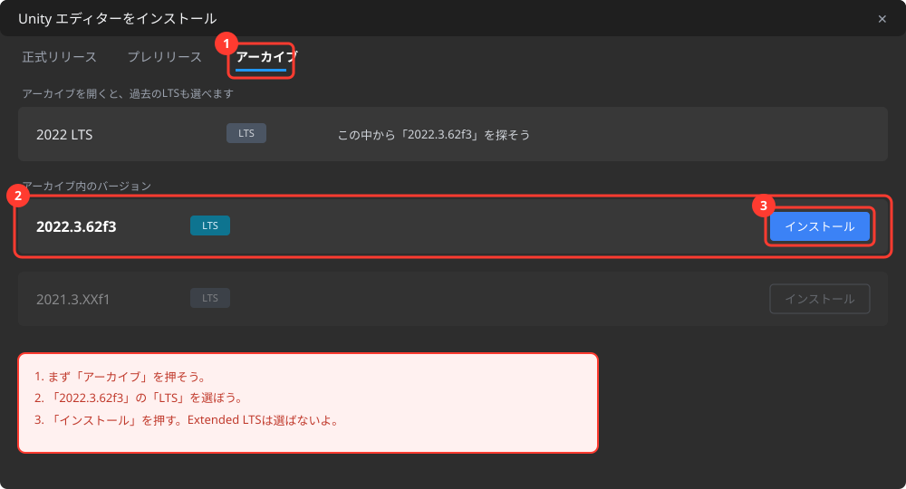
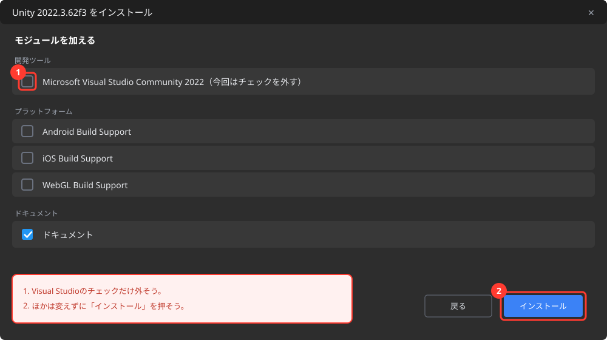
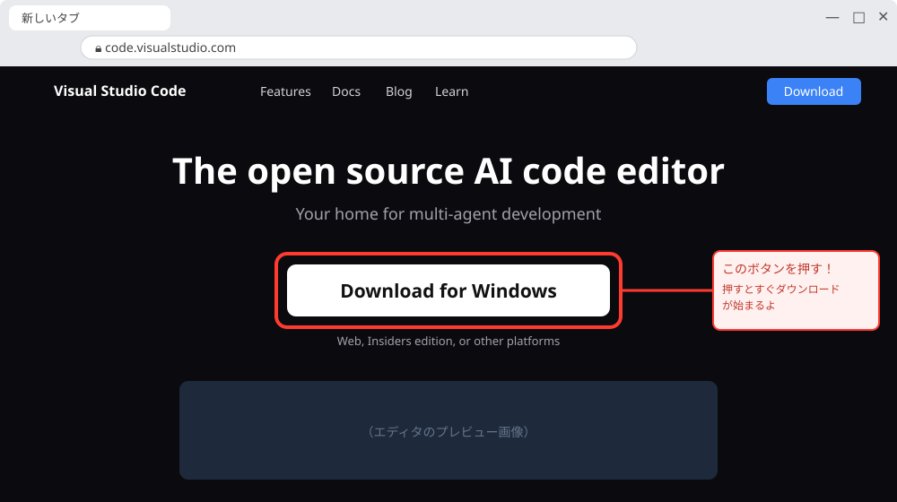
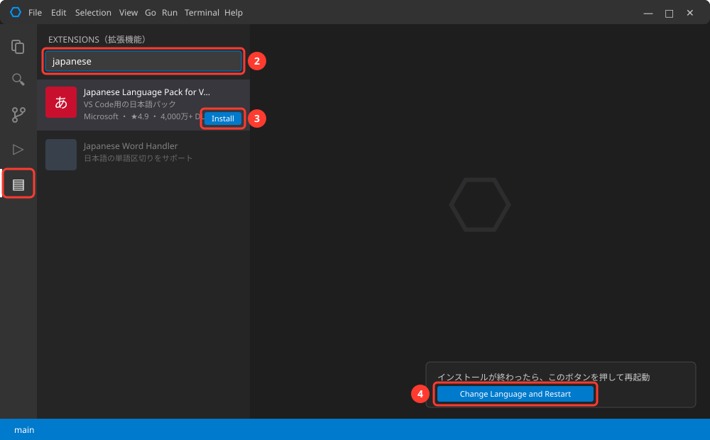

事前準備 〜Unityをインストールしよう〜
🎯 この章のゴール
- Unity Hub（Unityを管理する玄関アプリ）が入っている
- Unity 2022.3.62f3 LTS（ゲームを作るソフト本体）が自分のPCで起動する
- （余裕があれば）VSCode（プログラムを書くソフト）も入れてある
⚠️ 途中でうまくいかなくても大丈夫！
できたところまでで止めてOKです。
第1回の最初に講師と一緒に解決します。
「どこで止まったか」をメモしておいてくれると助かります。
インストールには合計20GB程度の空き容量と、アカウント登録用のメールアドレスが必要です。
登録などの作業は、できるだけお子さんと一緒に進めていただくようお願いします。
ご不明な点はお気軽にご連絡ください。
0-1. 準備するもの・確認すること
| 項目 | 内容 |
|---|---|
| パソコン | Windows 10/11 または Mac（ここ5年くらいのモデルなら基本OK） |
| 空き容量 | 20GB以上を推奨（Unity本体が大きいため） |
| ネット環境 | ダウンロードが数GBあるので、Wi-Fi環境で行う |
| メールアドレス | Unityのアカウント登録に使用（自分のがなければ保護者のものでOK） |
| 時間 | 60〜90分（＋回線によってはダウンロード待ち時間） |
🚨 空き容量の確認方法
Windows: エクスプローラーを開いて左側の「PC」をクリック →「Windows (C:)」の下に「空き領域 ○○GB」と表示されます。
Mac: 画面左上のリンゴマーク →「このMacについて」→「詳細情報」→「ストレージ設定」で確認できます。
足りない場合は、使っていないアプリや動画を削除するか、保護者の方に相談してください。
0-2. Unityアカウント（Unity ID）を作る
Unityを使うには無料のアカウントが必要です。
ブラウザで unity.com/ja を開き、右上の人型アイコン（またはサインイン）→「Unity IDを作成」を選びます。

画面イメージ図（実際の画面と多少異なる場合があります）
メールアドレス・パスワード・ユーザーネームなどを入力します。
GoogleアカウントでもOK。
登録したメールアドレスとパスワードは必ずメモしておこう（講習でも使います）。

画面イメージ図（実際の画面と多少異なる場合があります）
登録したアドレスにUnityからメールが届くので、中のリンク（またはボタン）を押して登録を完了させます。
0-3. Unity Hub をインストールする
Unity Hub（ユニティ ハブ）は、Unity本体やプロジェクトを管理する「玄関」のようなアプリです。
まずこれを入れます。
ブラウザで unity.com/ja/download を開き、自分のPCに合ったボタンを押します。
Windows: 「Windows用ダウンロード」を押す。
Mac: 「Mac用ダウンロード」を押す。
M1/M2/M3などのAppleシリコン用とIntel用がある場合は、「このMacについて」の「チップ」欄を見て選ぶ（AppleならApple silicon用）。

画像出典: Unity Learn（Unity Technologies）
Windows: ダウンロードした UnityHubSetup.exe をダブルクリック →「同意する」→「インストール」。
「このアプリがデバイスに変更を加えることを許可しますか？」
と出たら「はい」。
Mac: ダウンロードした .dmg を開き、Unity Hubのアイコンを「Applications」フォルダにドラッグ。
初回起動時に「開いてもよろしいですか？」
と聞かれたら「開く」。

画面イメージ図（実際の画面と多少異なる場合があります）
Unity Hubを起動し、0-2で作ったUnity IDでサインインします。
ライセンスについて聞かれたら、無料の「Unity Personal」を選べばOKです。

画面イメージ図（実際の画面と多少異なる場合があります）
0-4. Unity 2022.3.62f3 LTS 本体をインストールする
次に、Unity Hubからゲームを作るソフト本体を入れます。
この講座で使うのは「Unity 2022.3.62f3 LTS」です。
ここが一番時間がかかります（数GBのダウンロード）。
このテンプレートは最新のUnity 6ではうまく動かないという報告があるため、安定して動く Unity 2022.3 LTS を使います。
バージョン選びはゲーム開発でとても大事なポイントだよ。
Unity Hubの左メニューから「インストール」→ 右上の「エディターをインストール」ボタンを押します。

画像出典: Unity Learn（Unity Technologies）
最初に開く「正式リリース」には、Unity 6.5／6.3 LTS／6.0 などしか表示され、Unity 2022.3 は出てきません。
上にある「アーカイブ」を押してから、「2022.3.62f3」と書かれた「LTS」版を選び、「インストール」を押します。
「アーカイブ」が見当たらない・Hubから進めないときは、Unity公式のエディター・アーカイブを開き、2022 LTS → 2022.3.62f3（LTS）を選んでください。
Unity 6などの新しいバージョンは、今回は選ばないように注意！
安定していて長く使えるバージョンのこと。
迷ったらLTSを選ぼう。
この講座では無料のUnity Personalを使うので、「Extended LTS」「3-year LTS」と書かれたものは選ばず、2022.3.62f3 の「LTS」を選びます。

画面イメージ図（実際の画面と多少異なる場合があります）
「モジュールを加える」という画面が出たら、「Microsoft Visual Studio Community 2022」のチェックだけ外します。
この講座ではあとでVSCodeを使うため、Visual Studioは入れません。ほかの項目はそのままで、「インストール」（または「続行する」）を押します。
あとはダウンロードとインストールが終わるのを待ちます（30分以上かかることも。
放置でOK）。

画面イメージ図（実際の画面と多少異なる場合があります）
🚨 Unityの画面が英語だけど大丈夫？
大丈夫！
Unityの画面は英語ですが、この教科書がボタンの場所を日本語で全部案内します。
使ううちに「Play=再生」みたいに自然と覚えていくので、英語の勉強にもなるよ。
0-5. VSCode をインストールする（余裕があればでOK）
Visual Studio Code（VSCode）は、プログラムを書くためのソフトです。
この講座は「できあがったゲームを改造する」のが中心なので、プログラムを書く場面は少なめ。
必須ではないけれど、入れておくと講習中のちょっとした編集で安心です。
時間に余裕があればやっておこう。
ブラウザで code.visualstudio.com を開き、まん中の大きなダウンロードボタンを押します。
Windows: ダウンロードしたファイルをダブルクリック →「同意する」→ あとは「次へ」でOK。
Mac: ダウンロードしたzipを開き、「Visual Studio Code」を「アプリケーション」フォルダにドラッグ。

VSCodeを起動したら、左端の四角が4つ並んだアイコン（拡張機能）をクリック。
検索欄に japanese と入力し、「Japanese Language Pack」の Install を押します。
右下に出る「Change Language and Restart」を押すと日本語になります。

💡 ちなみに、ゲームで使うキャラクターや地面などの素材のダウンロードは不要です。
この講座で改造するゲーム（テンプレート）に、素材が最初から全部入っています。
0-6. 最後の確認 〜自宅での準備はここまで〜
Microgame版では、第1章で講師から受け取るゲームのプロジェクトを開きます。
そのため、第0章ではプロジェクトや作業フォルダを作りません。自宅では、Unityが入っているかだけ確認できればOKです。
Unity Hubを開き、「インストール」または「エディター」の一覧に 2022.3.62f3 が表示されていればOKです。
Unityエディタを起動するのは、第1章で講師配布の 2d-action-game を開くときが最初です。ここでプロジェクトを作る必要はありません。
0-7. 🚨 つまずきポイント集
ダウンロードがものすごく遅い・途中で止まる
対処: Wi-Fiルーターの近くで再挑戦。
夜など回線が混む時間帯を避けるのも効果的。
それでもだめなら、できたところまででOK。当日講師に相談してください。
「空き容量が足りません」と出た
対処: 使っていないアプリ・ゲーム・動画を削除して20GB以上空ける。
難しければ保護者の方に相談を。
どうしても無理なら当日相談してください。
Windows: 「WindowsによってPCが保護されました」と出た
対処: 「詳細情報」→「実行」を押せば進めます（Unity公式サイトからダウンロードしたファイルなら安全です）。
Mac: 「開発元を検証できないため開けません」と出た
対処: システム設定 →「プライバシーとセキュリティ」→ 下の方の「このまま開く」を押します。
確認メールが届かない
対処: 迷惑メールフォルダを確認。
キャリアメール（@docomo.ne.jp等）は届きにくいことがあるので、GmailなどのアドレスかGoogleアカウント連携がおすすめ。
Unity Hubにバージョン一覧が表示されない
対処: ネット接続を確認して、Unity Hubをいったん閉じて開き直す。
それでも出なければ当日一緒にやりましょう。
0-8. 🤖 AIを味方につけよう
インストールで困ったときのAI活用
✅ 良い使い方 — エラーメッセージをそのままコピペして聞くのがコツ
Unity Hubでインストール中に「（出たメッセージをそのまま貼る）」と表示されて進めません。
原因と対処法を、順番に1つずつ教えてください。
使っているPCはWindows 11です。
🚫 注意
- 「レジストリを編集」「ターミナルでコマンド実行」など、意味のわからない操作をすすめられたら実行せず、保護者に相談するか当日講師に聞こう
0-9. ✅ チェックリスト（当日このページを見せてね）
全部チェックできたら準備完了！
🎉 第1回でいよいよゲーム作りが始まります。
チェックできなかった項目があっても心配いりません。どこで止まったかメモして、当日そのまま来てください。